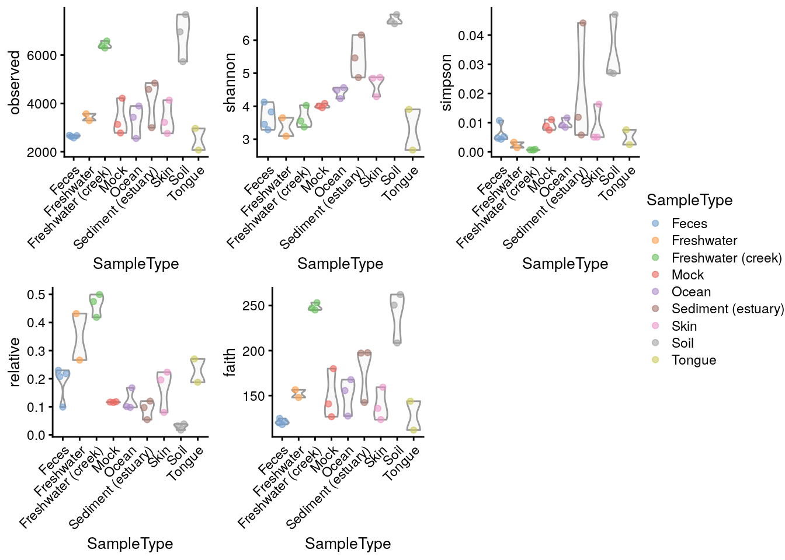
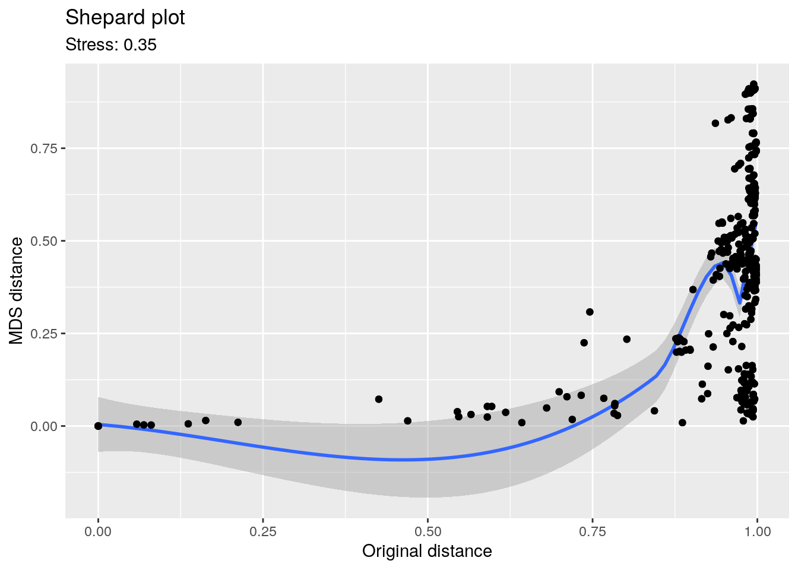

Chapter 6 Microbiome Diversity
Diversity estimates are a central topic in microbiome data analysis.
There are three commonly employed levels of diversity measurements, which are trying to put a number on different aspects of the questions associated with diversity (Whittaker 1960).
Many different ways for estimating such diversity measurements have been described in the literature. Which measurement is best or applicable for your samples, is not the aim of the following sections.
library(mia)
data("GlobalPatterns")
se <- GlobalPatterns6.1 Alpha diversity
Alpha diversity, also sometimes interchangeably used with the term species diversity, summarizes the distribution of species abundances in a given sample into a single number that depends on species richness and evenness. Diversity indices measure the overall community heterogeneity. A number of ecological diversity measures are available. The Hill coefficient combines many standard indices into a single equation that provides observed richness, inverse Simpson, and Shannon diversity, and generalized diversity as special cases. In general, diversity increases together with increasing richness and evenness. Sometimes richness, evenness, and dominance are considered to be variants of alpha diversity.
Richness refers to the total number of species in a community (sample). The simplest richness index is the number of observed species (observed richness). Assuming limited sampling from the community, however, this may underestimate the true species richness. Several estimators are available, including for instance ACE (A and SM 1992) and Chao1 (A 1984). Richness estimates are unaffected by species abundances.
Phylogenetic diversity was first proposed by (Faith 1992), unlike the
diversity measures mentioned above, Phylogenetic diversity (PD)
measure incorporates information from phylogenetic relationships
stored in phylo tree between species in a community (sample). The
Faith’s PD is calculated as the sum of branch length of all species in
a community (sample).
Evenness focuses on species abundances, and can thus complement the number of species. A typical evenness index is the Pielou’s evenness, which is Shannon diversity normalized by the observed richness.
Dominance indices are in general negatively correlated with diversity, and sometimes used in ecological literature. High dominance is obtained when one or few species have a high share of the total species abundance in the community.
6.1.1 Estimating alpha diversity
Alpha diversity can be estimated with wrapper functions that interact
with other packages implementing the calculation, such as vegan
(Oksanen et al. 2020).
6.1.1.1 Richness
Richness gives the number of features present within a community and can be calculated with estimateRichness. Each of the estimate diversity/richness/evenness/dominance functions adds the calculated measure(s) to the colData of the SummarizedExperiment under the given column name. Here, we calculate observed features as a measure of richness.
se <- mia::estimateRichness(se,
abund_values = "counts",
index = "observed",
name="observed")
head(colData(se)$observed)## CL3 CC1 SV1 M31Fcsw M11Fcsw M31Plmr
## 6964 7679 5729 2667 2574 3214This allows access to the values to be analyzed directly from the colData, for example
by plotting them using plotColData from the scater package (McCarthy et al. 2020).
library(scater)
plotColData(se,
"observed",
"SampleType",
colour_by = "SampleType") +
theme(axis.text.x = element_text(angle=45,hjust=1)) +
ylab(expression(Richness[Observed]))
Figure 6.1: Shannon diversity estimates plotted grouped by sample type.
6.1.1.2 Diversity
Non-Phylogenetic measures
The main function, estimateDiversity, calculates the selected
diversity index based on the selected assay data.
se <- mia::estimateDiversity(se,
abund_values = "counts",
index = "shannon",
name = "shannon")
head(colData(se)$shannon)## CL3 CC1 SV1 M31Fcsw M11Fcsw M31Plmr
## 6.577 6.777 6.498 3.828 3.288 4.289Phylogenetic diversity
The phylogenetic diversity is calculated by mia::estimateDiversity. This is a faster re-implementation of
the widely function in picante W et al. (2010).
Load picante R package and get the phylo stored in rowTree.
se <- mia::estimateDiversity(se,
abund_values = "counts",
index = "faith",
name = "faith")
head(colData(se)$faith)## [1] 250.5 262.3 208.5 117.9 119.8 135.86.1.1.3 Evenness
Evenness can be calculated with estimateEvenness.
se <- estimateEvenness(se,
abund_values = "counts",
index="simpson")
head(colData(se)$simpson)## [1] 0.026871 0.027197 0.047049 0.005179 0.004304 0.0050116.1.1.4 Dominance
Dominance can be calculated with estimateDominance. Here, the Relative index is calculated which is the relative abundance of the most dominant species in the sample.
se <- estimateDominance(se,
abund_values = "counts",
index="relative")
head(colData(se)$relative)## CL3 CC1 SV1 M31Fcsw M11Fcsw M31Plmr
## 0.03910 0.03226 0.01690 0.22981 0.21778 0.223296.1.1.5 Rarity
TODO…
6.1.2 Visualize alpha diversities
A plot comparing all the diversity measures calculated above and stored in colData can then be constructed directly.
plots <- lapply(c("observed", "shannon","simpson", "relative", "faith"),
plotColData,
object = se,
x = "SampleType",
colour_by = "SampleType")
plots <- lapply(plots,"+", theme(axis.text.x = element_text(angle=45,hjust=1)))
ggpubr::ggarrange(plotlist = plots, nrow = 2, ncol = 3, common.legend = TRUE, legend = "right")
6.2 Beta diversity
Where alpha diversity focuses on community variation within a community (sample), beta diversity quantifies (dis-)similarites between communities (samples). Some of the most popular beta diversity measures in microbiome research include Bray-Curtis index (for compositional data), Jaccard index (for presence / absence data, ignoring abundance information), Aitchison distance (Euclidean distance for clr transformed abundances, aiming to avoid the compositionality bias), and the Unifrac distances (that take into account the phylogenetic tree information). Only some of the commonly used beta diversity measures are actual distances; this is a mathematically well-defined concept and many ecological beta diversity measures, such as Bray-Curtis index, are not proper distances. Therefore, the term dissimilarity or beta diversity is commonly used.
Technically, beta diversities are usually represented as dist
objects, which contain triangular data describing the distance between
each pair of samples. These distances can be further subjected to
ordination. Ordination is a common concept in ecology that aims to
reduce the dimensionsionality of the data for further evaluation or
visualization. Ordination techniques aim to capture as much of
essential information in the data as possible in a lower dimensional
representation. Dimension reduction is bound to loose information but
the common ordination techniques aim to preserve relevant information
of sample similarities in an optimal way, which is defined in
different way by different methods. [TODO add references and/or link
to ordination chapter instead?]
Some of the most common ordination methods in microbiome research include Principal Component Analysis (PCA), metric and non-metric multi-dimensional scaling (MDS, NMDS), The MDS methods is also known as Principal Coordinates Analysis (PCoA). Other recently popular techniques include t-SNE and UMAP.
6.2.1 Explained variance
The percentage of explained variance is typically shown for PCA ordination plots. This quantifies the proportion of overall variance in the data that is captured by the PCA axes, or how well the ordination axes reflect the original distances.
Sometimes a similar measure is shown for MDS/PCoA. The interpretation is generally different, however, and hence we do not recommend using it. PCA is a special case of PCoA with Euclidean distances. With non-Euclidean dissimilarities PCoA uses a trick where the pointwise dissimilarities are first cast into similarities a Euclidean space (with some information loss i.e. stress) and then projected to the maximal variance axes. In this case, the maximal variance axes do not directly reflect the correspondence of the projected distances and original distances, as they do for PCA.
In typical use cases, we would like to know how well the ordination reflects the original similarity structures; then the quantity of interest is the so-called “stress” function, which measures the difference in pairwise similarities between the data points in the original (high-dimensional) vs. projected (low-dimensional) space.
Hence, we propose that for PCoA and other ordination methods, users would report relative stress (varies in the unit interval; the smaller the better). This can be calculated as shown below. For further examples, check the note from Huber lab.
# Example data
data(GlobalPatterns)
# Data matrix (features x samples)
x <- GlobalPatterns
x <- transformCounts(x, method = "relabundance")
x <- assay(x, "relabundance")
# Quantify dissimilarities in the original feature space
library(vegan)
d0 <- as.matrix(vegdist(t(x), "bray"))
# PCoA Ordination
pcoa <- as.data.frame(cmdscale(d0, k = 2))
names(pcoa) <- c("PCoA1", "PCoA2")
# Quantify dissimilarities in the ordination space
dp <- as.matrix(dist(pcoa))
# Calculate stress i.e. relative difference in the original and
# projected dissimilarities
stress <- sum((dp - d0)^2)/sum(d0^2)Shepard plot visualizes the original versus projected (ordination) dissimilarities between the data points:
ord <- order(as.vector(d0))
df <- data.frame(d0 = as.vector(d0)[ord],
dmds = as.vector(dp)[ord])
library(ggplot2)
ggplot(aes(x = d0, y = dmds), data=df) +
geom_smooth() +
geom_point() +
labs(title = "Shepard plot",
x = "Original distance",
y = "MDS distance",
subtitle = paste("Stress:", round(stress, 2))) +
theme_bw()
6.2.2 Estimating beta diversity
In the following examples dissimilarities are calculated by
functions supplied to the FUN argument. This function can defined by
the user. It must return a dist function, which can then be used to
calculate reduced dimension either via ordination methods (such as MDS
or NMDS), and the results can be stored in the reducedDim.
This entire process is wrapped in the runMDS and runNMDS
functions.
se <- runMDS(se, FUN = vegan::vegdist, name = "MDS_BC", exprs_values = "counts")Sample similarities can be visualized on a lower-dimensional display
(typically 2D) using the plotReducedDim function in the
scaterpackage. This provides also further tools to incorporate
additional information using variations in colour, shape or size.
# Create ggplot object
p <- plotReducedDim(se, "MDS_BC", colour_by = "SampleType")
# Add explained variance for each axis
e <- attr(reducedDim(se, "MDS_BC"), "eig");
rel_eig <- e/sum(e[e>0])
p <- p + labs(x = paste("PCoA 1 (", round(100 * rel_eig[[1]],1), "%", ")", sep = ""),
y = paste("PCoA 2 (", round(100 * rel_eig[[2]],1), "%", ")", sep = ""))
print(p)
Figure 6.2: MDS plot based on the Bray-Curtis distances on the GlobalPattern dataset.
With additional tools from the ggplot2 universe, comparisons can be
performed informing on the applicability to visualize sample similarities in a
meaningful way.
se <- runMDS(se, FUN = vegan::vegdist, name = "MDS_euclidean",
method = "euclidean", exprs_values = "counts")
se <- runNMDS(se, FUN = vegan::vegdist, name = "NMDS_BC")## initial value 47.733208
## iter 5 value 33.853364
## iter 10 value 32.891200
## final value 32.823570
## convergedse <- runNMDS(se, FUN = vegan::vegdist, name = "NMDS_euclidean",
method = "euclidean")## initial value 31.882673
## final value 31.882673
## convergedplots <- lapply(c("MDS_BC","MDS_euclidean","NMDS_BC","NMDS_euclidean"),
plotReducedDim, object = se, colour_by = "SampleType")
ggpubr::ggarrange(plotlist = plots, nrow = 2, ncol = 2, common.legend = TRUE,
legend = "right")
Figure 6.3: Comparison of MDS and NMDS plots based on the Bray-Curtis or euclidean distances on the GlobalPattern dataset.
The UniFrac method is a special case, as it requires data on the
relationship of features in form on a phylo tree. calculateUniFrac
performs the calculation to return a dist object, which can again be
used within runMDS.
se <- runMDS(se, FUN = calculateUniFrac, name = "UniFrac",
tree = rowTree(se),
ntop = nrow(se),
exprs_values = "counts")plotReducedDim(se, "UniFrac", colour_by = "SampleType")
Figure 6.4: UniFrac distances scaled by MDS of the GlobalPattern dataset.
6.2.3 Other ordination methods
Other dimension reduction methods, such as PCA, t-SNE and UMAP are
inherited directly from the scater package.
se <- runPCA(se, name = "PCA", exprs_values = "counts", ncomponents = 10)plotReducedDim(se, "PCA", colour_by = "SampleType")
Figure 6.5: PCA plot on the GlobalPatterns data set containing sample from different sources.
As mentioned before, applicability of the different methods depends on your sample set.
FIXME: let us switch to UMAP for the examples?
se <- runTSNE(se, name = "TSNE", exprs_values = "counts", ncomponents = 3)plotReducedDim(se, "TSNE", colour_by = "SampleType", ncomponents = c(1:3))
Figure 6.6: t-SNE plot on the GlobalPatterns data set containing sample from different sources.
6.3 Community comparisons [TODO combine with the material above for simplicity?]
A typical comparison of community composition starts with a visual comparison of the groups on a 2D ordination.
Let us load an example data set:
library(microbiomeDataSets)
se.lahti <- LahtiMData()Then we estimate relative abundances and MDS ordination based on Bray-Curtis (BC) dissimilarity between the groups, and visualize the results.
se.lahti <- relAbundanceCounts(se.lahti)
se.lahti <- runNMDS(se.lahti, FUN = vegan::vegdist, name = "BC", nmdsFUN = "monoMDS",
exprs_values = "relabundance",
keep_dist = TRUE)plotReducedDim(se.lahti, "BC", colour_by = "group")
No clear difference between the groups can be visually observed.
6.3.1 Testing differences in community composition between sample groups
The permutational analysis of variance (PERMANOVA) (Anderson 2001) is a widely used non-parametric multivariate method that can be used to estimate the actual statistical significance of differences in the observed community composition between two groups of samples.
PERMANOVA evaluates the hypothesis that the centroids and dispersion of the community are equivalent between the compared groups. A small p-value indicates that the compared groups have, on average, a different community composition.
This method is implemented in the vegan package (function adonis).
library(vegan)
permanova <- vegan::adonis(t(assay(se.lahti,"relabundance")) ~ group,
data = colData(se.lahti),
permutations = 9999)
# P-value
print(as.data.frame(permanova$aov.tab)["group", "Pr(>F)"])## [1] 0.2772In this case, the community composition is not significantly different between the groups.
Let us visualize the model coefficients for species that exhibit the largest differences between the groups. This gives some insights into how the groups tend to differ from each other in terms of community composition.
coef <- coefficients(permanova)["group1",]
top.coef <- sort(head(coef[rev(order(abs(coef)))],20))ggplot(data.frame(x = top.coef,
y = factor(names(top.coef),
unique(names(top.coef)))),
aes(x = x, y = y)) +
geom_bar(stat="identity") +
labs(x="",y="",title="Top Taxa") +
theme_bw()
In the above example, the largest differences between the two groups can be attributed to Bacteroides intestinalis (elevated in the first group) and Faecalibacterium prausnitzii (elevated in the second group), and many other co-varying species.
6.3.2 Checking the homogeneity condition
It is important to note that the application of PERMANOVA assumes homogeneous group dispersions (variances). This can be tested with the PERMDISP2 method (Anderson 2006).
anova(vegan::betadisper(attr(reducedDim(se.lahti,"BC"),"dist"),
colData(se.lahti)$group))## Analysis of Variance Table
##
## Response: Distances
## Df Sum Sq Mean Sq F value Pr(>F)
## Groups 1 0.000 0.00002 0 0.95
## Residuals 42 0.158 0.00376In our example, the groups have similar dispersion, and PERMANOVA is an appropriate choice for comparing community compositions.
6.4 Further reading
In certain settings, beta diversities might be used to group samples without prior knowledge. For this we want to point to excellent resources on how to extract information from the clusters.
See also community typing.
Session Info
R version 4.1.0 (2021-05-18)
Platform: x86_64-pc-linux-gnu (64-bit)
Running under: Ubuntu 20.04.2 LTS
Matrix products: default
BLAS/LAPACK: /usr/lib/x86_64-linux-gnu/openblas-pthread/libopenblasp-r0.3.8.so
locale:
[1] LC_CTYPE=en_US.UTF-8 LC_NUMERIC=C
[3] LC_TIME=en_US.UTF-8 LC_COLLATE=en_US.UTF-8
[5] LC_MONETARY=en_US.UTF-8 LC_MESSAGES=C
[7] LC_PAPER=en_US.UTF-8 LC_NAME=C
[9] LC_ADDRESS=C LC_TELEPHONE=C
[11] LC_MEASUREMENT=en_US.UTF-8 LC_IDENTIFICATION=C
attached base packages:
[1] stats4 stats graphics grDevices utils datasets methods
[8] base
other attached packages:
[1] microbiomeDataSets_1.1.0 MultiAssayExperiment_1.19.1
[3] vegan_2.5-7 lattice_0.20-44
[5] permute_0.9-5 scater_1.21.2
[7] ggplot2_3.3.5 scuttle_1.3.0
[9] mia_1.1.7 TreeSummarizedExperiment_2.1.3
[11] Biostrings_2.61.1 XVector_0.33.0
[13] SingleCellExperiment_1.15.1 SummarizedExperiment_1.23.1
[15] Biobase_2.53.0 GenomicRanges_1.45.0
[17] GenomeInfoDb_1.29.3 IRanges_2.27.0
[19] S4Vectors_0.31.0 BiocGenerics_0.39.1
[21] MatrixGenerics_1.5.1 matrixStats_0.59.0
[23] BiocStyle_2.21.3 rebook_1.3.0
loaded via a namespace (and not attached):
[1] readxl_1.3.1 backports_1.2.1
[3] AnnotationHub_3.1.3 BiocFileCache_2.1.1
[5] plyr_1.8.6 lazyeval_0.2.2
[7] splines_4.1.0 BiocParallel_1.27.2
[9] digest_0.6.27 htmltools_0.5.1.1
[11] viridis_0.6.1 fansi_0.5.0
[13] magrittr_2.0.1 memoise_2.0.0
[15] ScaledMatrix_1.1.0 cluster_2.1.2
[17] DECIPHER_2.21.0 openxlsx_4.2.4
[19] colorspace_2.0-2 rappdirs_0.3.3
[21] blob_1.2.1 haven_2.4.1
[23] xfun_0.24 dplyr_1.0.7
[25] crayon_1.4.1 RCurl_1.98-1.3
[27] jsonlite_1.7.2 graph_1.71.2
[29] ape_5.5 glue_1.4.2
[31] gtable_0.3.0 zlibbioc_1.39.0
[33] DelayedArray_0.19.1 car_3.0-11
[35] BiocSingular_1.9.1 abind_1.4-5
[37] scales_1.1.1 DBI_1.1.1
[39] rstatix_0.7.0 Rcpp_1.0.7
[41] xtable_1.8-4 viridisLite_0.4.0
[43] decontam_1.13.0 tidytree_0.3.4
[45] foreign_0.8-81 bit_4.0.4
[47] rsvd_1.0.5 httr_1.4.2
[49] dir.expiry_1.1.0 ellipsis_0.3.2
[51] pkgconfig_2.0.3 XML_3.99-0.6
[53] farver_2.1.0 dbplyr_2.1.1
[55] CodeDepends_0.6.5 sass_0.4.0
[57] utf8_1.2.1 AnnotationDbi_1.55.1
[59] later_1.2.0 tidyselect_1.1.1
[61] labeling_0.4.2 rlang_0.4.11
[63] reshape2_1.4.4 BiocVersion_3.14.0
[65] cellranger_1.1.0 munsell_0.5.0
[67] tools_4.1.0 cachem_1.0.5
[69] ExperimentHub_2.1.1 DirichletMultinomial_1.35.0
[71] generics_0.1.0 RSQLite_2.2.7
[73] broom_0.7.8 evaluate_0.14
[75] stringr_1.4.0 fastmap_1.1.0
[77] yaml_2.2.1 knitr_1.33
[79] bit64_4.0.5 zip_2.2.0
[81] purrr_0.3.4 KEGGREST_1.33.0
[83] nlme_3.1-152 sparseMatrixStats_1.5.0
[85] mime_0.11 compiler_4.1.0
[87] png_0.1-7 interactiveDisplayBase_1.31.0
[89] beeswarm_0.4.0 filelock_1.0.2
[91] curl_4.3.2 ggsignif_0.6.2
[93] treeio_1.17.2 tibble_3.1.2
[95] bslib_0.2.5.1 stringi_1.7.2
[97] highr_0.9 forcats_0.5.1
[99] Matrix_1.3-4 vctrs_0.3.8
[101] pillar_1.6.1 lifecycle_1.0.0
[103] BiocManager_1.30.16 jquerylib_0.1.4
[105] BiocNeighbors_1.11.0 data.table_1.14.0
[107] cowplot_1.1.1 bitops_1.0-7
[109] irlba_2.3.3 httpuv_1.6.1
[111] R6_2.5.0 promises_1.2.0.1
[113] bookdown_0.22 gridExtra_2.3
[115] rio_0.5.27 vipor_0.4.5
[117] codetools_0.2-18 MASS_7.3-54
[119] assertthat_0.2.1 withr_2.4.2
[121] GenomeInfoDbData_1.2.6 mgcv_1.8-36
[123] parallel_4.1.0 hms_1.1.0
[125] grid_4.1.0 beachmat_2.9.0
[127] tidyr_1.1.3 rmarkdown_2.9
[129] DelayedMatrixStats_1.15.0 carData_3.0-4
[131] Rtsne_0.15 ggpubr_0.4.0
[133] shiny_1.6.0 ggbeeswarm_0.6.0